Screenshots
Here are some screen shots of examples that are included in the wxHaskell library.
The screenshots are taken on various Linux, Windows, and Mac OS X systems. When the screens look differently it is normally due to differences in the native look-and-feel of a platform. Many differences are intentional – one
can normally specify the exact appearance if needed.
Hello world
[source wx,
source wxcore]. Let's start with the infamous "Hello World" application.
Note how the status bar reflects the menu option. (Note: The "File" menu disappears on the Mac as both menu items are
moved to the standard Mac application menu.)
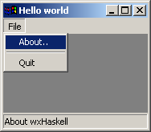
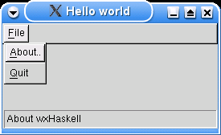
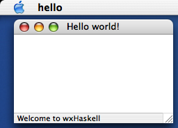
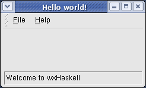
Image viewer
[source wx,
source wxcore]. This example uses a standard file open dialog to open image files in various
formats (jpg, gif, png, bmp etc.) and displays them. The windows example shows an image of a notorious Norwegian Haskell hacker skiing on mount Hood. Note the custom application icon.
| 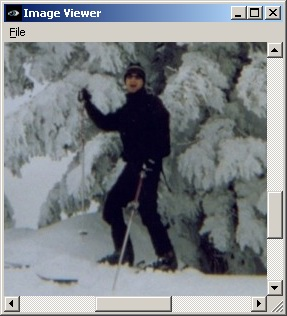 |
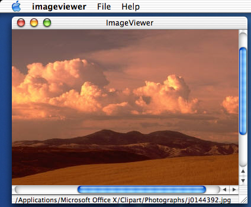 |
| Windows XP |
MacOS X |
And an extended imageviewer with a toolbar and statusbar:
| 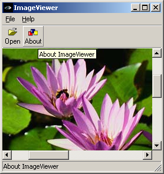 |
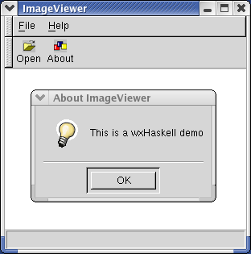 |
| Windows XP |
Red Hat Linux with GTK |
Time flows
[source wx]. An old Fran demo! This sample shows how to use the idle event handler to implement a
resource aware and responsive GUI that still performs heavy animation. A nice sample to practice on: extend it
yourself with menus, status bars, and options dialogs.
| 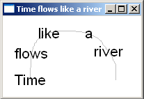 |
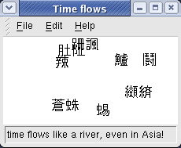 |
| Basic sample on Windows XP | Extended sample on Red Hat Linux with GTK |
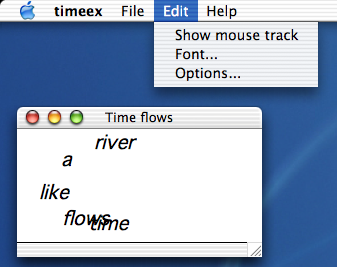
Extended sample on MacOS X
Controls
[source wx]. A sample that shows different standard controls, like buttons, listboxes, sliders, radio buttons, etc.
| 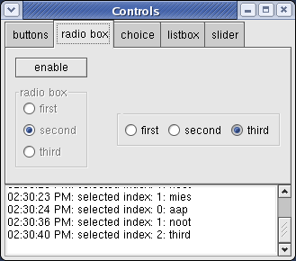 |
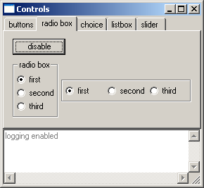 |
| Red Hat Linux (Fedora) | Windows XP (Classic look) |

MacOS X (Jaguar)
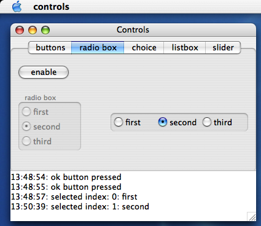
MacOS X (Panther)
FileBrowse
[source wx]. A (very) simple file browser that demonstrates the use of tree controls, list controls and splitter windows.
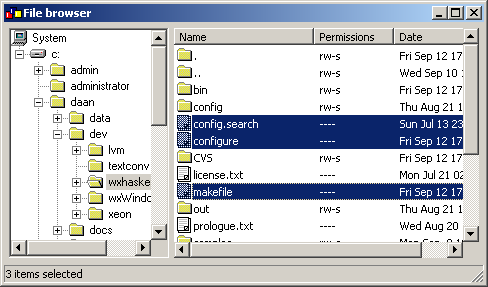
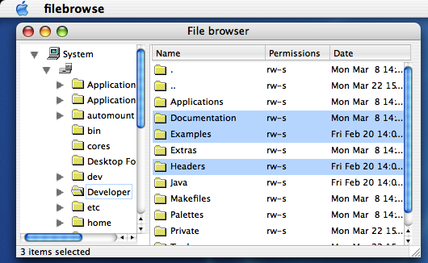
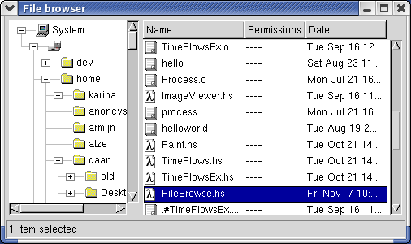
Grid
[source wx]. Simple demo of the wxGrid control and wxGrid events.
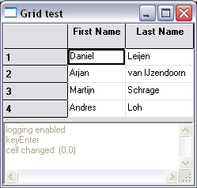
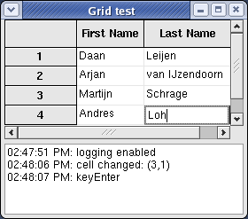
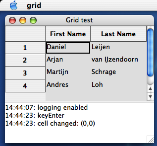
OpenGL [source contrib].
Sean Seefried and Shelarcy have provided
these screenshots that demonstrate the wxHaskell OpenGL
canvas using the HOpenGL binding
by Sven Panne.
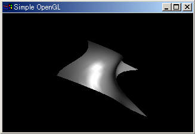
OpenGL Bezier Curve on Windows.

OpenGL Cone on MacOSX (Click image to enlarge)
toplast update: "Jul 27 2004".